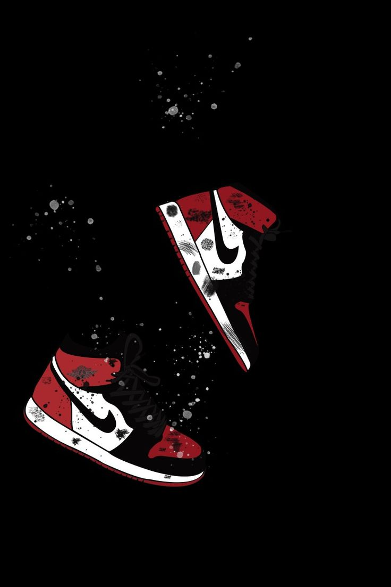
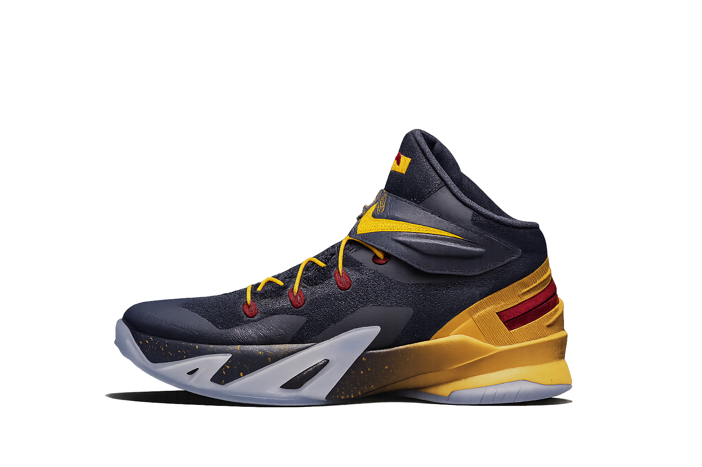

Our Solutions
Stride isn't just about sneakers — it's about smarter, stronger, and more sustainable movement.
Performance & Comfort
Stride sneakers are designed with high-torque soles and adaptive cushioning that support your every move — whether you're walking, running, or grinding through the day.

Style for Every Occasion
From streetwear to sleek fashion, our sneakers elevate every outfit. Minimalist designs meet futuristic vibes — wear your stride anywhere.
Sustainability at the Core
Every pair is crafted with eco-conscious materials, helping reduce waste and carbon footprint. Because clean steps make a cleaner planet.


Durability & Value
Built with precision stitching and long-lasting soles, Stride sneakers are made to stay strong no matter how many miles you take on.